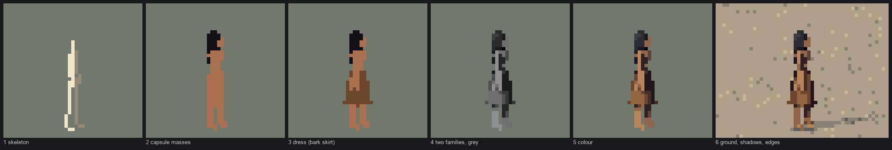
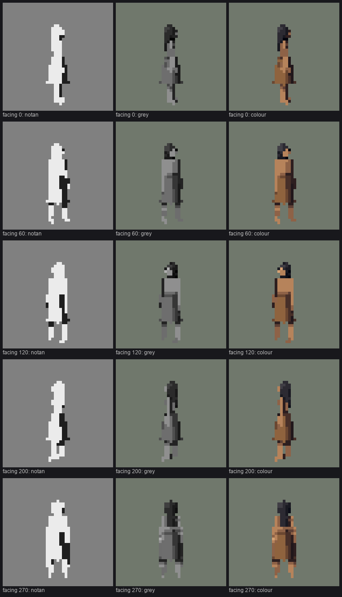

4. Shading a figure: two families, and the darks that tie it
Back to the tutorial. Code: render.smooth_normals, render.shade, render.edge_rule, grounds.shadows, in ~/work/pixelart-studies/elements/people/src/.
Everything the rasterizer writes (material, normal, depth, part, figure) is resolved into steps in one pass over the whole canvas. Each material has a five-step ramp: 0 core, 1 shadow, 2 halftone, 3 light, 4 highlight. This page is the order that pass runs in, and why each step is there.

study. One figure built up at 32 px, 8×: skeleton; capsule masses; dress; two light families in grey; colour; on the ground with contact line, cast shadow and the edge rule.
Blur the normals within each surface first
A torso is five capsules (chest bar, two waist halves, pelvis bar, buttocks). Lit separately, each has its own terminator, and the torso shades as a patchwork of lit and dark pieces: the mottled chests in nb015 below. So before lighting, normals are averaged over each pixel's 3×3 neighbours that belong to the same surface group:
GROUPS = {'torso': 'body', 'neck': 'body', 'head': 'head', 'hair': 'head', 'hairknot': 'head'}
def smooth_normals(cv, it=1):
n = cv.n.copy(); g = cv.group; m = cv.idx > 0
acc = n * m[..., None]; cnt = m.astype(float)
for dy in (-1, 0, 1):
for dx in (-1, 0, 1):
if dy == 0 and dx == 0:
continue
same = m & (np.roll(np.roll(g, dy, 0), dx, 1) == g) & np.roll(np.roll(m, dy, 0), dx, 1)
acc = acc + np.roll(np.roll(n, dy, 0), dx, 1) * same[..., None]
cnt = cnt + same
n = acc / np.maximum(cnt, 1)[..., None]
return n / np.maximum(np.linalg.norm(n, axis=-1, keepdims=True), 1e-6)
Arms, legs and garments are their own groups, so their edges against the torso stay sharp. That's where the seams below go.

nb015. Before the blur: every torso is mottled with lit and shadow capsules.

nb016. After it, in the same step as the face capsule: each torso turns as one form, lit on the sun side, one clean shadow plane on the other.
Two families that never mix
The atelier student's rule. Every pixel is lit or in shadow:
lam = (n * L).sum(-1)
step = np.where(lam > 0.38, 3, np.where(lam > 0.04, 2, 1)) # light / halftone | shadow
if size_px >= 22:
step = np.where(lam > 0.88, 4, step) # a highlight only when there's room
under = n[..., 1] < -0.55
if size_px >= 12:
step = np.where((lam <= 0.05) & under, 0, step) # the core on undersides
Both gates matter. Below 12 px the dark core pixel under a chin or a skirt read as a hole, and below 22 px a highlight is a random bright pixel, not a form.

study. Notan, grey and colour from five sides. The notans (two values only) hold in every view. Check notan first; if it doesn't read in two values it won't read in five.
The far limb one step down
Each part knows whether it's on the far side of the body from the camera (from the facing angle), and far parts sit one step darker. At a few pixels this is the only thing that separates two legs, so below 10 px it's the one offset kept for figures:
lz = -math.cos(facing * D2R) # z of the body's left side in world
sideL = -1 if lz < -0.35 else (1 if lz > 0.35 else 0)
# in the rasterizer: stepmod = prim.stepmod + (-1 if prim.side < 0 else 0)
Seams, tucks and hem shadows: the darks that tie a figure
Bruegel's figures are tied together by a dark internal shadow: under the arm, between the legs, under the hem. Three rules put those darks back.
Occlusion seam (≥ 10 px). Where a nearer part of the same figure borders a farther part of a different group, the farther pixel goes one step down. An arm across the torso, or a leg in front of a leg, gets a one-pixel dark edge on the part behind. That's the "contrast inside the mark" rule at figure scale.
for dy, dx in ((-1, 0), (1, 0), (0, -1), (0, 1)):
zn = np.roll(np.roll(z, dy, 0), dx, 1)
gn = np.roll(np.roll(cv.group, dy, 0), dx, 1)
fn = np.roll(np.roll(fig, dy, 0), dx, 1)
dark |= m & mn & (fn == fig) & (gn != cv.group) & (zn > z + thr)
step = np.where(dark, step - 1, step)
Hem shadow (≥ 12 px). Legs directly under a skirt, cape or blanket take one step down for one pixel (two at ≥ 20 px). The garment casts a short shadow on the legs.
Tuck (≥ 16 px). A shadow-family pixel with a much nearer part of the same figure within two pixels goes to the core step: the armpit, between the thighs, under the chin.
tuck |= (fn == cv.fig) & (gn != cv.group) & (zn > cv.z + 1.2)
step = np.where(tuck & (step <= 1) & m, 0, step)
These three are what make a figure look like a body rather than a paper doll. They're also subtle, and at 12 px and below the hem shadow is the only one that survives.
The edge rule
This is the technique I'd keep if I could keep only one. A small figure on a mid-value ground is lost wherever its edge pixel has nearly the ground's value, which is exactly what happens with bare skin and bark on sand. Outlines everywhere would be ugly and un-Ferrari-like (the cobbles student's critic called them "leaded glass"). So the rule outlines only where the figure would be lost:
def edge_rule(idx, fig_mask, lut, thresh=0.075):
"""A figure pixel on its silhouette whose value is too close to the ground beside it moves one
step away from the ground's value (darker on light ground, lighter on dark)."""
Ltab = lab_img(lut[None].astype(np.uint8))[0][:, 0] # OKLab L of every palette entry
L = Ltab[idx]
st, mt = idx % 8, idx // 8
dstep = np.zeros(idx.shape, int)
for dy, dx in ((1, 0), (-1, 0), (0, 1), (0, -1)):
nm = np.roll(np.roll(fig_mask, dy, 0), dx, 1)
nL = np.roll(np.roll(L, dy, 0), dx, 1)
edge = fig_mask & ~nm & (np.abs(L - nL) < thresh)
dstep = np.where(edge & (dstep == 0), np.where(nL > L, -1, 1), dstep)
st = np.clip(st + dstep, 0, NSTEP - 1)
return np.where(fig_mask, mt * 8 + st, idx).astype(np.int16)
It works in index space, so it holds at every hour: it's evaluated on the palette actually being used. It runs after the ground is composited and applies to people only; props keep their own values.

fig. Bare summer figures on sand at 12 and 8 px, rule off and on. It's most visible on the walking woman's back, the man's arms, and the child at 8 px, whose legs vanish into the sand without it.
The threshold (0.075 OKLab L) is about half the gap between adjacent steps of a mid-value ramp. Larger, and it starts outlining figures that already read.
Contact and cast shadow
Two darks on the ground, both made by stepping the ground's own index down, so the gravel keeps its stones inside the shadow:
- Contact: the darkest step for one row under the lowest pixels of each figure, and one step down beside them. It's Bruegel's "dark under the figure", and the studio's flat-contact-plus-dark-line rule.
- Cast: the figure's mask projected onto the ground plane along the light. It's solid within 0.6 of stature of the feet and checker-dithered beyond, which is how Ferrari draws a soft shadow. People on platforms or in canoes cast none.
hpx = np.maximum(foot - (ys + 0.5), 0) / max(math.cos(e), 0.2) # height above the ground, px
dx = -L[0] / L[1] * hpx * cast_len
dy = (-L[2] / L[1]) * hpx * math.sin(e) * cast_len
far = hpx[ok] > 0.6 * scene.scale
keep = ~far | ((sx[ok] + sy[ok]) % 2 == 0)

nb026. The first scene, before the fixes: ruler-straight solid shadows, loud gravel, a figure-sized white slab.
The first noon shadows were long checker strips that a critic read as "skid marks". Noon's sun went up to 68°, so noon shadows are short; long shadows belong to morning and golden hour, as they do outdoors.
Where it falls short
This is where the figures are furthest from Ferrari. Within each family a mass is one or two flat steps. He'd design three or four lit planes on a body (shoulder, ribs, hip) with a lit edge band, and let the colour walk in hue across them. My masses are correct and flat. The next step up in quality is probably a plane map per body part, which the atelier student's boulder work shows how to do. The tucks and seams are the right idea at too small a dose.